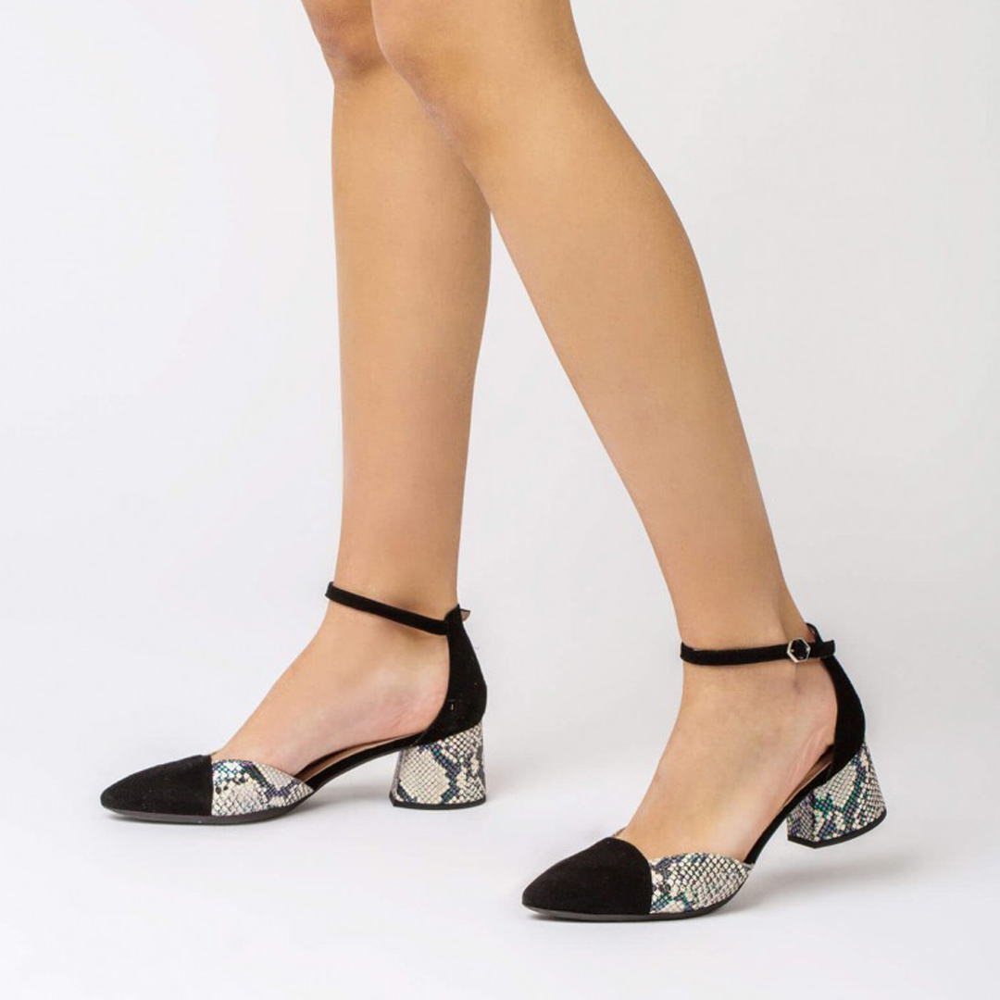

Los zapatos con tacón alto son aquellos que tienen más de 7 cm de altura.
Estilizan la figura, sobre todo las piernas, y te serán de gran ayuda si tienes las piernas cortas.
Son mejores para llevar con vestidos largos y, sobre todo, si no tienes que caminar mucho, lo cual podría ocasionarte hasta una tendinitis que te dure varios días.
Si se trata de una fiesta menos formal, como una comida especial de trabajo o un aniversario, los tacones altos de Penélope 5704 te proporcionarán además comodidad para bailar. Para una fiesta veraniega, también son excelentes los Patricia Miller 3722.

Y es que las botas masculinas, los mocasines o cualquier zapato clásico no suele variar a grandes rasgos a lo largo del tiempo. Por el contrario, los modelos deportivos o los zapatos casual hombre son los que más modificaciones sufren a lo largo del tiempo. Las últimas tendencias apuestan por las zapatillas deportivas, pero estandarizándolas a un nivel de uso urbano. Naciendo de esta forma el propio zapato casual hombre.
Los zapatos de tacón medio son los tacones más habituales en botas, botines, sandalias y otros zapatos que se pueden vestir diariamente. Miden menos de 7 cm y tienen una altura media. Al ser más cómodos que los tacones altos, puedes llevarlos diariamente a trabajar, en una salida informal con amigos, en alguna fiesta… todo depende del estilo de zapatos.
